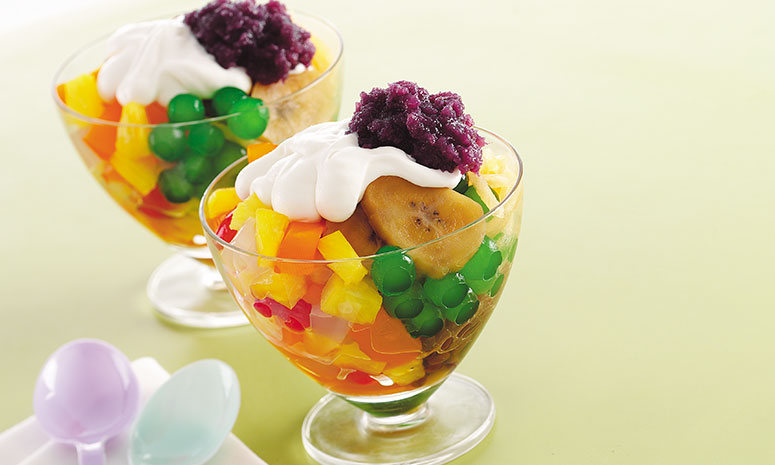

Halo-Halo Salad

Try this twist to a classic Pinoy dessert favorite.
Preparation Time: 10 mins.
Cooking Time: 25 mins.
Total Time: 35 mins.
Ingredients
- 2 pc banana, saba, ripe, peeled and sliced
- 1/3 cup monggo, red, cooked
- 1/2 cup water
- 1/4 cup sugar, brown
- 1/2 cup sago, white, cooked
- 1 can DEL MONTE Fiesta Fruit Cocktail (836g), drained, reserve syrup
- 150 g melon, shredded
- 1/2 cup all-purpose cream, chilled
- 3 Tbsp condensed milk, sweetened
- 1/3 cup ube halaya, softened
- 1/2 cup leche flan, cubed
Instructions
- Cook saba and monggo beans in water, reserved fruit cocktail syrup, and brown sugar for 7 minutes or until saba is cooked. Add sago. Allow to simmer. Drain. Combine with DEL MONTE Fiesta Fruit Cocktail and melon.
- Mix all purpose cream, condensed milk, and halaya. Combine with fruit cocktail mixture. Chill until ready to serve. Top with leche flan.